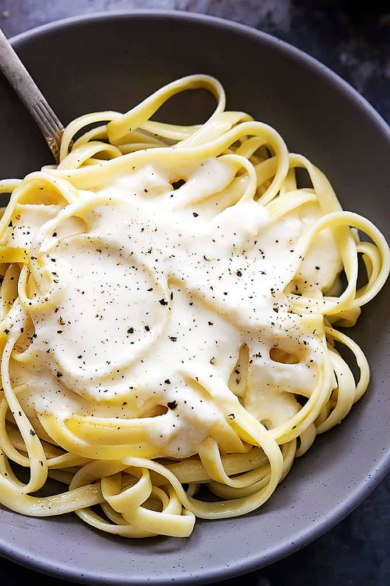

RECIPES
Home
Portfolio
Ingredients
Radish
Spring Onion
Yoghurt
Recipes
Radish Cake (萝卜糕)
Recipe's 1:1.3 (flour water ration) is a bit dry > to explore 1:1.5 ratio
Kimchi
Scallion Pancake (葱油饼)
Creamy sauce for chicken

Alfredo sauce for Pasta